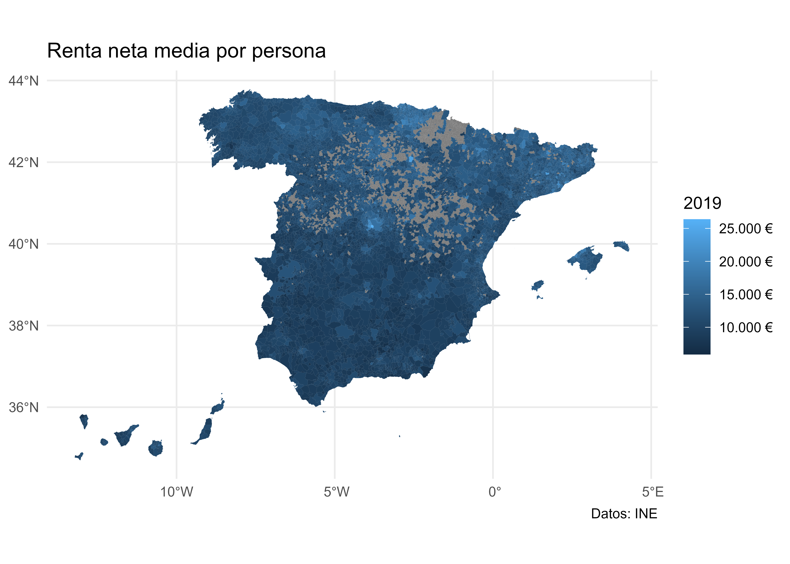
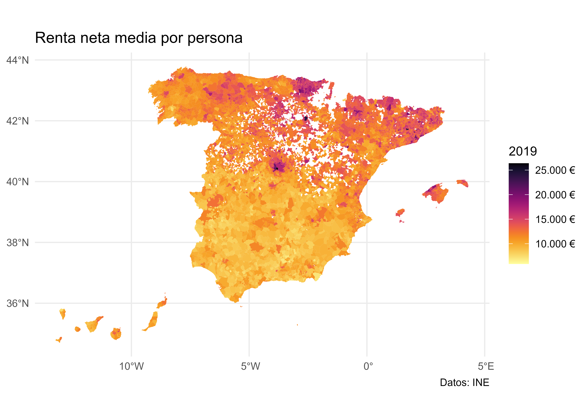

Capítulo 5 Aplicaciones
NOTA: En las siguientes aplicaciones se asumen que los datos se localizan
en la carpeta data del proyecto de R-Studio en el que se esté trabajando.
5.1 Temperaturas mínimas en España
Objetivo de aprendizaje
Este caso práctico muestra como leer y graficar datos espaciales en R. Para ello, vamos a trabajar con los datos de temperatura mínima registradas en España por las estaciones metereológicas de la AEMET.
Tarea 1: Abrimos RStudio
El presente análisis se va a realizar empleando RStudio, por lo que empezaremos abriendo el programa y creando un nuevo proyecto de R en File>New Proyect.
Tarea 2: Importamos y describimos los datos objeto de estudio
El conjunto de datos proporcionado (tempmin.csv) contiene el nivel de
temperatura del aire en España entre el 6 y el 10 de Enero de
20211. Estos datos han sido descargados usando la librería
climaemet (Pizarro, Hernangómez, & Fernández-Avilés, 2021) y han sido posteriormente tratados para su uso en
esta práctica.
El primer paso consiste en importar la base de datos de temperatura mínima. El
archivo está en formato csv, por lo cual es un fichero de texto plano. Podemos
usar varias funciones para realizar la importación, en este caso vamos a emplear
paquetes del tidyverse para realizar todo el tratamiento de datos:
library(readr)
# cada uno debe seleccionar el directorio donde tiene los datos, de ahí
# que sea conveniente trabajar con proyectos
tmin <- read_csv("data/tempmin.csv")Q1: ¿Qué información tiene tmin?
| fecha | indicativo | tmin | longitud | latitud |
|---|---|---|---|---|
| 2021-01-06 | 4358X | -4.7 | -5.880556 | 38.95556 |
| 2021-01-06 | 4220X | -7.0 | -4.616389 | 39.08861 |
| 2021-01-06 | 6106X | 4.7 | -4.748333 | 37.02944 |
| 2021-01-06 | 9698U | -6.8 | 0.865278 | 42.20528 |
| 2021-01-06 | 4410X | -3.4 | -6.385556 | 38.91583 |
| 2021-01-06 | 1331A | 1.0 | -7.031389 | 43.52472 |
Podemos observar que la tabla generada contiene 5 columnas distintas:
fecha: Indicando la fecha de observación.indicativo: Es el identificador de la estación de la AEMET que registró el dato.tmin: Dato de temperatura mínima registrada en cada fecha por la estación correspondiente en grados centígrados.longitud,latitud: Coordenadas geográficas de la estación
Tarea 3. Convertir tmin a un objeto de la clase espacial geoR
Para convertir un objeto a geodata (el formato requerido por geoR),
proporcionaremos una tabla con las coordenadas y los valores a incluir en cada
coordenada. En este ejemplo, vamos a emplear sólamente los datos
correspondientes al 8 de enero.
library(dplyr)
library(geoR)
tmin_geoR <- tmin %>%
filter(fecha == "2021-01-08") %>%
# Seleccionamos las columnas de interés
dplyr::select(longitud, latitud, tmin) %>%
# Y creamos el objeto geodata
as.geodata(
coords.col = 1:2,
data.col = 3
)
summary(tmin_geoR)
#> Number of data points: 211
#>
#> Coordinates summary
#> longitud latitud
#> min -9.291389 35.27639
#> max 4.215556 43.78611
#>
#> Distance summary
#> min max
#> 0.01024389 13.85144264
#>
#> Data summary
#> Min. 1st Qu. Median Mean 3rd Qu. Max.
#> -14.9000000 -4.6000000 -0.5000000 -0.6293839 3.5000000 13.6000000
plot(tmin_geoR)
Figura 5.1: Objetos en geoR
Tarea 4. Convertir tmin a un objeto de la clase espacial sf
En esta tarea, convertiremos los datos de tmin en un objeto espacial sf, es
decir, datos espaciales de tipo vector.
Los datos de tmin contienen coordenadas geográficas longitud/latitud, asi que
como vimos en la sección Sistema de Referencia de Coordenadas (CRS) el CRS a
emplear ha de ser un CRS geográfico. Usaremos el código EPSG 4326, que
corresponde a coordenadas geográficas y suele ser el habitual en este tipo de
situaciones.
library(sf)
tmin_sf <- st_as_sf(tmin,
coords = c("longitud", "latitud"),
crs = 4326
)
tmin_sf
#> Simple feature collection with 1066 features and 3 fields
#> Geometry type: POINT
#> Dimension: XY
#> Bounding box: xmin: -9.291389 ymin: 35.27639 xmax: 4.215556 ymax: 43.78611
#> Geodetic CRS: WGS 84
#> # A tibble: 1,066 x 4
#> fecha indicativo tmin geometry
#> * <date> <chr> <dbl> <POINT [°]>
#> 1 2021-01-06 4358X -4.7 (-5.880556 38.95556)
#> 2 2021-01-06 4220X -7 (-4.616389 39.08861)
#> 3 2021-01-06 6106X 4.7 (-4.748333 37.02944)
#> 4 2021-01-06 9698U -6.8 (0.865278 42.20528)
#> 5 2021-01-06 4410X -3.4 (-6.385556 38.91583)
#> 6 2021-01-06 1331A 1 (-7.031389 43.52472)
#> 7 2021-01-06 1690A -0.1 (-7.859722 42.32528)
#> 8 2021-01-06 8489X -8 (-0.255833 40.43333)
#> 9 2021-01-06 8025 2 (-0.494167 38.3725)
#> 10 2021-01-06 9784P -10 (0.224722 42.63)
#> # ... with 1,056 more rowsTarea 5: Dibujemos las estaciones de monitoreo de la temperaria mínima en un mapa de España. Ámbito espacial.
Vamos, además, a incluir una capa de las comunidades autónomas de España. Para
ello usaremos un paquete API que nos proporciona esta información en formato
sf:
library(mapSpain)
# sf object
esp <- esp_get_ccaa() %>%
# No vamos a usar Canarias en este análisis
filter(ine.ccaa.name != "Canarias")
plot(esp$geometry) # Dibujamo el mapa de España menos las Islas Canarias
Figura 5.2: Mapa de España (Sin Canarias)
Q2: ¿Tengo el Sistema de referencia de coordenadas (CRS) de las estaciones de monitoreo en la misma proyección que el contorno de España?
Como se comentó en la sección Sistema de Referencia de Coordenadas (CRS), cuando se emplean datos geográficos provenientes de varias fuentes, es necesario asegurarse de que ambos objetos están usando el mismo CRS. Vamos a comprobarlo:
st_crs(tmin_sf) == st_crs(esp)
#> [1] FALSEVemos que no lo están, por lo que vamos a proyectar las coordenadas a un CRS
común. En este caso usaremos el CRS de referencia de tmin_sf:
esp2 <- st_transform(esp, st_crs(tmin_sf))
st_crs(tmin_sf) == st_crs(esp2)
#> [1] TRUEDibujamos las estaciones de monitoreo con el contorno de España. Vamos a usar el
paquete ggplot2 como referencia, sin embargo existen varios paquetes
especializados en mapas temáticos, como pueden ser tmap o mapsf.
library(ggplot2)
ggplot(esp2) +
# Para graficar objetos sf debemos usar geom_sf()
geom_sf() +
geom_sf(data = tmin_sf) +
theme_light() +
labs(
title = "Estaciones de monitoreo AEMET en España",
subtitle = "excluyendo las Islas Canarias"
) +
theme(
plot.title = element_text(
size = 12,
face = "bold"
),
plot.subtitle = element_text(
size = 8,
face = "italic"
)
)
Figura 5.3: Estaciones de AEMET en la Península Ibérica
Tarea 6: Representamos la variable temperatura mínima tmin para el día 8 de
enero de 2021.
En la siguiente tarea, seleccionaremos los datos correspondientes al 8 de enero de 2021 y crearemos un mapa temático en el que representaremos los valores de temperatura mínima registrados en cada estación mediante un código de colores.
tmin_8enero <- tmin_sf %>%
# seleccionamos el día y la variable
filter(fecha == "2021-01-08")
plot(tmin_8enero["tmin"],
main = "Temperatura mínima (8-enero-2021)",
pch = 8
)Figura 5.4: Mapa de puntos con temperatura mínima
Podemos utilizar el ámbito espacial, el contorno de España para graficar y contar la historia de la Filomena un poco mejor.
Figura 5.5: Mapa completo con temperatura mínima
Tarea 7: Interpolación de la variable temperatura mínima tmin para el día 8
de enero de 2021 con IDW
Q3: El mapa ha quedado muy claro. Vemos como los datos nos cuentan la historia de Filomena en aquellos sitios donde se tomaron mediciones, pero ¿podríamos tener un mapa de interpolación para tener una estimación de la temperatura mínima en las partes donde la AEMET no tiene estación de monitoreo?
Tal y como se avanzó en teoría, parece lógico pensar que aquellos puntos que estén cerca tendrán valores similares así que tomemos ventaja de la dependencia espacial y utilicemos un método determinista, como la Distancia Inversa Ponderada, comúnmente conocido por su acrónimo inglés IDW (Inverse distance weighted), el cual es uno de los métodos más simples para llevar para llevar a cabo una interpolación espacial.
En este tipo de análisis, es crucial que el CRS sea el apropiado. En este caso, ya definimos el CRS como un CRS geográfico (es decir, usando coordenadas de longitud y latitud). Sin embargo, para el ejercicio de interpolación es más adecuado usar un CRS local (que provoque pocas deformaciones en la proyección de España) y en alguna unidad de distancia, como metros (ya vimos que en los CRS geográficos las unidades son grados).
Si usamos el paquete crsuggest podemos observar los CRS sugeridos:
library(crsuggest)
sugiere <- suggest_crs(tmin_8enero, units = "m", limit = 5)
# Usamos la sugerencia del paquete
crs_sugerido <- st_crs(sugiere[1, ]$crs_proj4)
esp3 <- st_transform(esp2, crs_sugerido)
tmin_8enero3 <- st_transform(tmin_8enero, crs_sugerido)Q4: ¿Dónde vamos a interpolar? ¿En que puntos?
Para realizar la interpolación, necesitamos generar una malla que representará las celdas de las que queremos obtener el valor interpolado.
Dado que hemos proyectado nuestros datos a un CRS cuya unidad son los metros, podemos definir el tamaño de cada celda en metros cuadrados. En este caso vamos a usar celdas de 100 kms cuadrados (10 x 10 kms):
set.seed(9876) # Con esto aseguramos que el grid generado siempre es igual
malla_sf <- st_make_grid(
esp3,
cellsize = 8000
)Graficamos la superficie para ver exactamente qué hemos construido:
ggplot(esp3) +
geom_sf() +
geom_sf(
data = malla_sf,
size = 0.1,
col = "red", alpha = 1,
fill = NA
) +
geom_sf(
data = tmin_8enero3,
aes(fill = "AEMET Stations"), size = 4, shape = 21,
color = "blue"
) +
scale_fill_manual(values = adjustcolor("blue", alpha.f = 0.2)) +
theme_void() +
theme(legend.position = "bottom") +
labs(
title = "Cuadrícula espacial para interpolar",
fill = ""
)Figura 5.6: Malla de puntos para interpolación
Se puede observar claramente cada una de las celdas que hemos creado. La interpolación asignará un valor a cada uno de ellas.
A continuación podemos llevar a cabo la interpolación usando el paquete gstat.
Además, en lugar de celdas (polígonos) es necesario usar puntos en la
interpolación. Calcularemos, por tanto, un punto representativo de cada celda,
el centroide, que es el punto resultante de realizar la media arimética de las
coordenadas de loss puntos que componen los lados de cada celda
# Calculamos centroide
malla_sf_cent <- st_centroid(malla_sf, of_largest_polygon = TRUE)
library(gstat)
tmin_idw <- idw(
# Indicamos la variable que queremos interpolar
tmin ~ 1,
# Indicamos el conjunto de datos donde está la variable
tmin_8enero3,
# Indicamos la malla de destino, en sf
newdata = malla_sf_cent,
idp = 2.0 # Especifica la potencia de la IDW
)
#> [inverse distance weighted interpolation]
head(tmin_idw)
#> Simple feature collection with 6 features and 2 fields
#> Geometry type: POINT
#> Dimension: XY
#> Bounding box: xmin: 146290.9 ymin: 69457.31 xmax: 186290.9 ymax: 69457.31
#> CRS: +proj=lcc +lat_1=40 +lat_0=40 +lon_0=0 +k_0=0.9988085293 +x_0=600000 +y_0=600000 +a=6378298.3 +rf=294.73 +pm=madrid +units=m +no_defs
#> var1.pred var1.var geometry
#> 1 2.518621 NA POINT (146290.9 69457.31)
#> 2 2.586930 NA POINT (154290.9 69457.31)
#> 3 2.656846 NA POINT (162290.9 69457.31)
#> 4 2.728395 NA POINT (170290.9 69457.31)
#> 5 2.801600 NA POINT (178290.9 69457.31)
#> 6 2.876486 NA POINT (186290.9 69457.31)Tarea 8. Mapa de contorno
Representamos la interpolación con un mapa y mapa de contorno muy utilizado para
representar datos espaciales. Para ello, vamos a usar el paquete raster
convirtiendo nuestro objeto interpolado.
# Convertimos de sf a SpatiaPixels
# Esto funciona porque nuestros puntos sf están espaciados regularmente
tmin_pixels <- tmin_idw %>%
as("Spatial") %>%
as("SpatialPixels")
library(raster)
# Creamos un raster de nuestros pixels
rast_esp <- raster(tmin_pixels)
# Transferimos valores del objeto sf al raster
rast_esp2 <- rasterize(
tmin_idw,
rast_esp,
field = "var1.pred", ## valores de predicción
fun = mean
)
# Además, podemos recortar el raster a la forma de España
rast_esp_mask <- mask(rast_esp2, esp3)
plot(rast_esp_mask, col = colores)
contour(rast_esp2, add = TRUE)
Figura 5.7: Mapa raster con lineas de nivel
Podemos realizar el mismo mapa usando ggplot2 y la función
geom_contour_filled:
# Creo una tabla para geom contour
coordenadas <- st_coordinates(tmin_idw)
valor <- tmin_idw$var1.pred
idw_df <- data.frame(
# Necesitamos redondear las coordenadas
latitud = round(coordenadas[, 2], 6),
longitud = round(coordenadas[, 1], 6),
tmin = valor
)
ggplot() +
geom_contour_filled(
data = idw_df,
aes(x = longitud, y = latitud, z = tmin),
na.rm = TRUE,
breaks = cortes
) +
# Reajustamos la escala de colores
scale_fill_manual(values = colores) +
# CCAA
geom_sf(data = esp3, fill = NA) +
theme_minimal() +
theme(axis.title = element_blank()) +
labs(
fill = "Temp. (º)",
title = "Temperatura mínima interpolada",
subtitle = "8 de Enero 2021",
caption = "Datos: AEMET"
)Figura 5.8: Mapa con ggplot2 y lineas de nivel
5.2 Renta media por municipios
Esta sección presenta un caso de uso en el que aprenderemos a realizar las siguientes tareas básicas:
Importar datos tabulares y datos espaciales.
Realizar un tratamiento de limpieza de datos y cruzar tablas.
Hacer mapas temáticos. Aprenderemos también algunas nociones básicas sobre cómo crear diferentes clases para un conjunto de datos continuo.
Para ello, partiremos de dos ficheros:
Fichero
renta_municipio.csv: Este fichero contiene información de la Renta Neta per cápita por municipios (en euros), distritos y secciones censales. Esta información se ha extraído del Atlas de distribución de renta de los hogares proporcionado por el INE, y ha sido tratado previamente para adaptar la información al presente ejercicio.Fichero
municipios.gpkg: Es un fichero que contiene datos espaciales (polígonos) de los municipios en España en el año 2019. Se ha extraído del Instituto Geográfico Nacional (IGN) usando el paquetemapSpain.
Tarea 1. Importar los datos a R
El primer paso en cualquier tipo de análisis de datos es importar los datos al software de tratamiento (en nuestro caso, R) y analizarlos para conocer el tipo de información que contiene:
# Usaremos paquetes del tidyverse
library(dplyr)
library(readr)
renta <- read_csv("data/renta_municipio.csv", na = ".")library(sf)
munis <- st_read("data/municipios.gpkg", quiet = TRUE)Q1: ¿Qué información tenemos sobre la variable?
head(renta)
#> # A tibble: 6 x 6
#> Unidad `2019` `2018` `2017` `2016` `2015`
#> <chr> <dbl> <dbl> <dbl> <dbl> <dbl>
#> 1 44001 Ababuj NA NA NA NA NA
#> 2 4400101 Ababuj distrito 01 NA NA NA NA NA
#> 3 4400101001 Ababuj sección 01001 NA NA NA NA NA
#> 4 40001 Abades 11429 10731 10314 9816 9904
#> 5 4000101 Abades distrito 01 11429 10731 10314 9816 9904
#> 6 4000101001 Abades sección 01001 11429 10731 10314 9816 9904Podemos comprobar que tenemos información para los años 2015 a 2019. Además, la
columna Unidad contiene un literal con el municipio o sección correspondiente.
Q2: ¿Qué información tenemos sobre el objeto espacial?
head(munis)
#> Simple feature collection with 6 features and 7 fields
#> Geometry type: MULTIPOLYGON
#> Dimension: XY
#> Bounding box: xmin: -3.140179 ymin: 36.73817 xmax: -2.057058 ymax: 37.54579
#> Geodetic CRS: ETRS89
#> codauto ine.ccaa.name cpro ine.prov.name cmun name LAU_CODE geom
#> 1 01 Andalucía 04 Almería 001 Abla 04001 MULTIPOLYGON (((-2.775594 3...
#> 2 01 Andalucía 04 Almería 002 Abrucena 04002 MULTIPOLYGON (((-2.787566 3...
#> 3 01 Andalucía 04 Almería 003 Adra 04003 MULTIPOLYGON (((-3.051988 3...
#> 4 01 Andalucía 04 Almería 004 Albanchez 04004 MULTIPOLYGON (((-2.181086 3...
#> 5 01 Andalucía 04 Almería 005 Alboloduy 04005 MULTIPOLYGON (((-2.572442 3...
#> 6 01 Andalucía 04 Almería 006 Albox 04006 MULTIPOLYGON (((-2.128106 3...Podemos comprobar que munis es un objeto que contiene Polígonos y varias
columnas, entre ellas dos especialmente relevantes: cpro y cmun, que
corresponden a los códigos de provincia y de municipio respectivamente. Podemos
comprobar que este código también se encuentra en nuestro dataset renta.
Tarea 2. Comprobamos campos en común para un municipio: Noblejas
# Miro un municipio: Noblejas
renta[grep("Noblejas", renta$Unidad), ]
#> # A tibble: 5 x 6
#> Unidad `2019` `2018` `2017` `2016` `2015`
#> <chr> <dbl> <dbl> <dbl> <dbl> <dbl>
#> 1 45115 Noblejas 10591 10314 9751 9484 9124
#> 2 4511501 Noblejas distrito 01 11039 10717 10135 9711 9386
#> 3 4511501001 Noblejas sección 01001 11039 10717 10135 9711 9386
#> 4 4511502 Noblejas distrito 02 10276 10029 9475 9319 8938
#> 5 4511502001 Noblejas sección 02001 10276 10029 9475 9319 8938
munis[grep("Noblejas", munis$name), c("name", "cpro", "cmun")]
#> Simple feature collection with 1 feature and 3 fields
#> Geometry type: MULTIPOLYGON
#> Dimension: XY
#> Bounding box: xmin: -3.489824 ymin: 39.93003 xmax: -3.372611 ymax: 40.05017
#> Geodetic CRS: ETRS89
#> name cpro cmun geom
#> 4985 Noblejas 45 115 MULTIPOLYGON (((-3.44681 40...En el caso de Noblejas, el código completo es 45115. Sin embargo, en el caso de
la tabla renta, debemos extraer ese valor del literal. Para ello debemos
manipular la columna y extraer la primera palabra de la columna Unidad:
# Creo una función y la aplico a toda la columna
extrae_codigo <- function(x) {
unlist(strsplit(x, " "))[1]
}
renta$codigo_ine <- sapply(as.character(renta$Unidad), extrae_codigo)
head(renta[c("Unidad", "codigo_ine")])
#> # A tibble: 6 x 2
#> Unidad codigo_ine
#> <chr> <chr>
#> 1 44001 Ababuj 44001
#> 2 4400101 Ababuj distrito 01 4400101
#> 3 4400101001 Ababuj sección 01001 4400101001
#> 4 40001 Abades 40001
#> 5 4000101 Abades distrito 01 4000101
#> 6 4000101001 Abades sección 01001 4000101001Ahora, es necesario crear la misma variable en munis para poder realizar el
cruce:
munis$codigo_ine <- paste0(munis$cpro, munis$cmun)
head(munis[, c("name", "codigo_ine")])
#> Simple feature collection with 6 features and 2 fields
#> Geometry type: MULTIPOLYGON
#> Dimension: XY
#> Bounding box: xmin: -3.140179 ymin: 36.73817 xmax: -2.057058 ymax: 37.54579
#> Geodetic CRS: ETRS89
#> name codigo_ine geom
#> 1 Abla 04001 MULTIPOLYGON (((-2.775594 3...
#> 2 Abrucena 04002 MULTIPOLYGON (((-2.787566 3...
#> 3 Adra 04003 MULTIPOLYGON (((-3.051988 3...
#> 4 Albanchez 04004 MULTIPOLYGON (((-2.181086 3...
#> 5 Alboloduy 04005 MULTIPOLYGON (((-2.572442 3...
#> 6 Albox 04006 MULTIPOLYGON (((-2.128106 3...Tarea 3: Unimos los objetos renta y mapas con la función left_join
Ya estamos listos para realizar el cruce. Además, seleccionaremos sólo las columnas que vamos a usar, en este caso la del año 2019:
munis_renta <- munis %>%
left_join(renta) %>%
dplyr::select(name, cpro, cmun, `2019`)Cuando crucemos datos espaciales con datos no espaciales en R, es importante que el primer dataset sea el que contiene los datos espaciales. Esto es así porque el objeto resultante “hereda” la clase del primer objeto.
Q3: ¿Qué ocurre si realizáramos el proceso poniendo los datos espaciales en el lado derecho del join?
A modo de ejemplo, si realizáramos el proceso poniendo los datos espaciales en el lado derecho del join, los datos finales no serán espaciales:
# Miramos la clase de munis_renta
class(munis_renta)
#> [1] "sf" "data.frame"
# Es un sf, por tanto espacial
# ¿Que pasa si realizamos el cruce de la otra manera?
renta %>%
left_join(munis) %>%
dplyr::select(name, cpro, cmun, `2019`) %>%
class()
#> [1] "tbl_df" "tbl" "data.frame"El resultado es un tibble o data.frame, ¡pero no es espacial!
Tarea 4. Histograma de la distribución de la renta
Una vez que tenemos los datos unidos podemos realizar algunos análisis básicos, como la realización de un histograma
library(ggplot2)
munis_renta %>%
ggplot(aes(x = `2019`)) +
geom_histogram(color = "darkblue", fill = "lightblue") +
scale_x_continuous(labels = scales::label_number_auto()) +
scale_y_continuous(labels = scales::label_percent()) +
labs(
y = "",
x = "Renta neta media por persona (€)"
)
Podemos observar que la renta presenta una distribución Gamma con un gran de municipios concentrados en zonas medias de renta y pocos municipios en tramos de rentas altas. Como veremos más adelante, esta distribución va a afectar a la información que transmite el mapa.
Tarea 5. Mapa de coropletas de la distribución de la renta
Vamos a realizar ahora un mapa de coropletas mostrando la distribución de la renta usando los valores brutos de renta sin modificar:
ggplot(munis_renta) +
# Usamos geom_sf, y como aes() lo que queremos mostrar, en este caso, el
# color del polígono representa la renta. Vamos a retirar los bordes con
# color = NA
geom_sf(aes(fill = `2019`), color = NA) +
theme_minimal() +
scale_fill_continuous(labels = scales::label_number(
big.mark = ".",
decimal.mark = ",",
suffix = " €"
)) +
labs(
title = "Renta neta media por persona",
caption = "Datos: INE"
)
Este primer mapa no es demasiado informativo, por los siguientes motivos:
Existe una serie de municipios para los que no tenemos datos.
La escala de color no es la más adecuada.
Dada la distribución de los datos, puede ser adecuado crear grupos de renta para que el mapa sea más interpretable.
Tarea 6. Eliminamos los municipios sin datos y cambiamos la escala de color
Vamos a probar a eliminar los municipios sin datos y a cambiar la escala de color para ver si mejora la visualización.
munis_renta_clean <- munis_renta %>% filter(!is.na(`2019`))
ggplot(munis_renta_clean) +
geom_sf(aes(fill = `2019`), color = NA) +
# Cambiamos la paleta de colores, vamos a usar una paleta denominada Inferno,
# ya incluida en base R con hcl.colors
# Como son datos continuos, puedo usar Inferno
scale_fill_gradientn(
colours = hcl.colors(20, "Inferno", rev = TRUE),
labels = scales::label_number(
big.mark = ".",
decimal.mark = ",",
suffix = " €"
)
) +
theme_minimal() +
labs(
title = "Renta neta media por persona",
caption = "Datos: INE"
)
Este mapa nos da algo más de información, y parece intuirse que las rentas más altas se encuentran en zonas de País Vasco, Madrid y Cataluña. Sin embargo, el hecho de que la distribución de los datos no sea normal está afectando a la visualización.
Tarea 7. Agrupar los datos en clases para mejorar la visualización
Para intentar atajar este problema, podemos dividir nuestros datos en clases,
por ejemplo cuartiles o deciles. Existen varios métodos de clasificación de
datos, que en R se encuentran implementados en el paquete classInt. A
continuación vamos a plantear diversos métodos de clasificación y observar cómo
la “historia” que cuenta el mapa varía en función de dichas clases. En este
ejemplo planteamos los siguientes métodos de clasificación:
El método de deciles: consiste en crear 10 categorías incluyendo el mismo número de registros en cada una de ellas.
El método de intervalos equivalentes: divide el rango de valores en un número de grupos definido. La distancia de todos los intervalos es idéntica, por lo que este método no tiene en cuenta la distribución de los registros.
El método de Fisher-Jenks: desarrollado específicamente para la clasificación de datos espaciales y su visualización en mapas. Produce agrupaciones de tal manera que los datos de cada grupo son “cercanas” entre sí y sustancialmente distintas de los valores de otros grupos.
library(classInt)
# Vamos a probar 3 métodos de clasificación: Deciles, tramos de Renta
# equidistantes y Fisher and Jenks
deciles <- classIntervals(munis_renta_clean$`2019`,
style = "quantile", n = 10
)
deciles
#> style: quantile
#> [5898,8935.6) [8935.6,9662.2) [9662.2,10352.8) [10352.8,10918) [10918,11462)
#> 656 656 655 654 655
#> [11462,11998.6) [11998.6,12651.4) [12651.4,13475.8) [13475.8,14618.4) [14618.4,26367]
#> 658 656 655 656 656
plot(deciles, pal = hcl.colors(20, "Inferno"), main = "Deciles")
# Tramos equidistantes en términos de renta
equal <- classIntervals(munis_renta_clean$`2019`,
style = "equal", n = 10
)
equal
#> style: equal
#> [5898,7944.9) [7944.9,9991.8) [9991.8,12038.7) [12038.7,14085.6) [14085.6,16132.5)
#> 103 1510 2374 1637 702
#> [16132.5,18179.4) [18179.4,20226.3) [20226.3,22273.2) [22273.2,24320.1) [24320.1,26367]
#> 161 52 14 3 1
plot(equal, pal = hcl.colors(20, "Inferno"), main = "Equidistantes")
fisher <- classIntervals(munis_renta_clean$`2019`,
style = "fisher",
# Fuerzo para mejorar la comparación entre métodos
n = 10
)
fisher
#> style: fisher
#> [5898,8743) [8743,9770.5) [9770.5,10754) [10754,11689) [11689,12668)
#> 505 904 1005 1159 1032
#> [12668,13803) [13803,15222.5) [15222.5,17196.5) [17196.5,20063.5) [20063.5,26367]
#> 874 651 305 103 19
plot(fisher,
pal = hcl.colors(20, "Inferno"),
main = "Fisher-Jenks"
)
Podemos observar lo siguiente:
El último decil de renta se corresponde a un rango de entre 15.000 y 25.000 €.
El método por deciles proporciona unos grupos con valores de renta muy parecidos entre sí en los valores medios. Esto es debido a la propia distribución de la variable.
El método de rangos equidistantes proporciona algunos grupos con un número muy reducido de municipios.
El método de Fisher-Jenks puede proporcionar unas clases con unos rangos más apropiados para los tramos altos de renta.
Tarea 8. Representar los mapas según las clases obtenidas
Vamos ahora a realizar 3 mapas distintos, creando clases de renta según cada uno de los métodos anteriormente mostrados.
Deciles
# Extraigo los valores de corte
breaks_d <- deciles$brks
# Y creo unas etiquetas básicas para cada clase
# Creo una función específica para crear etiquetas formateadas
label_fun <- function(x) {
l <- length(x)
eur <- paste0(prettyNum(round(x, 0),
decimal.mark = ",",
big.mark = "."
), " €")
labels <- paste(eur[-l], "-", eur[-1])
labels[1] <- paste("<", eur[1])
labels[l - 1] <- paste(">", eur[l - 1])
return(labels)
}
labels_d <- label_fun(breaks_d)
munis_renta_clean$Deciles <- cut(munis_renta_clean$`2019`,
breaks = breaks_d,
labels = labels_d,
include.lowest = TRUE
)
ggplot(munis_renta_clean) +
# Cambiamos la variable que usamos para crear el mapa
geom_sf(aes(fill = Deciles), color = NA) +
# Necesito cambiar el scale, ya no es continua
scale_fill_manual(values = hcl.colors(length(labels_d),
"Inferno",
rev = TRUE
)) +
theme_minimal() +
labs(
title = "Renta neta media por persona",
caption = "Datos: INE"
)
Figura 5.9: Mapa por deciles de renta
El mapa de la Fig. 5.9 ya nos permite observar patrones geográficos, donde se ve una clara diferencia entre la Comunidades Autónomas del Norte y las del Sur. Veamos una representación distina usando otras clases diferentes:
breaks_e <- equal$brks
labels_e <- label_fun(breaks_e)
munis_renta_clean$Equal <- cut(munis_renta_clean$`2019`,
breaks = breaks_e,
labels = labels_e,
include.lowest = TRUE
)
ggplot(munis_renta_clean) +
# Cambiamos la variable que usamos para crear el mapa
geom_sf(aes(fill = Equal), color = NA) +
scale_fill_manual(values = hcl.colors(length(labels_e),
"Inferno",
rev = TRUE
)) +
theme_minimal() +
labs(
title = "Renta neta media por persona",
caption = "Datos: INE"
)
Figura 5.10: Mapa por tramos de renta equidistantes
El mapa de la Fig. 5.9, sin embargo, se parece más al mapa que hicimos con los datos sin clasificar, donde el peso visual se concentra más bien en los municipios con rentas mucho más altas que el resto (por encimoa de 18.000 €).
Veamos el mismo mapa usando Fisher-Jenks:
breaks_f <- fisher$brks
labels_f <- label_fun(breaks_f)
munis_renta_clean$`Fisher-Jenks` <- cut(munis_renta_clean$`2019`,
breaks = breaks_f,
labels = labels_f,
include.lowest = TRUE
)
ggplot(munis_renta_clean) +
# Cambiamos la variable que usamos para crear el mapa
geom_sf(aes(fill = `Fisher-Jenks`), color = NA) +
scale_fill_manual(values = hcl.colors(length(labels_f),
"Inferno",
rev = TRUE
)) +
theme_minimal() +
labs(
title = "Renta neta media por persona",
caption = "Datos: INE"
)
Figura 5.11: Mapa por tramos según Fisher-Jenks
En el mapa de la Fig. 5.9 se puede observar de una manera más clara un cluster adicional de renta en la zona de Asturias y el norte de León. Además, gracias a la escala de colores puede intuirse que este clúster de renta no presenta valores tan altos como los observados en País Vasco o Madrid.
En conclusión, en el momento de realizar una visualización de datos es importante conocer el dato a representar, así como entender algunas propiedades básicas de la distribución subyacente. También hemos podido observar que hay ciertas decisiones estéticas (datos continuos vs. agrupados, escala de colores) que tienen una influencia significativa en cómo se percibe la información representada. Es responsabilidad del creador de la visualización el conocer todos estos factores y aplicarlos de manera conveniente.
Q4: Tenemos un mapa de los mismos datos pero la información se presenta de manera sesgada, ¿puedes identificar los motivos?
Figura 5.12: Ejemplo de visualización sesgada
En el mapa de la Fig. 5.12 parece que la renta per cápita de las comunidades del norte es desproporcionadamente superior a las del sur. Resumimos aquí los sesgos introducidos en el mapa:
En primer lugar, se han creado un elevado número de grupos en las zonas de rentas bajas. De esta manera, la escala del mapa parece estar muy fragmentada, sin embargo muchos de esos grupos apenas contienen municipios. A modo de ejemplo, los primeros cuatro grupos únicamente contienen 32 municipios.
Los grupos no se adaptan a la distribución subyacente de los datos. La mediana de los datos (11.462 €) estaría situada en la antepenúltima clase, de manera que los dos grupos de mayor renta contienen el 50% de los municipios.
Además, la escala de color se ha manipulado, de manera que los grupos de mayores renta destaquen más que el resto de manera notoria.
5.3 Análisis de patrones de puntos
Las técnicas de análisis de patrones de puntos analizan la distribución de eventos geolocalizados que surgen al azar. La diferencia fundamental con otros análisis que comprenden también el uso de localizaciones (como las temperaturas mínimas medidas por estaciones meteorológicas) es que en este caso los puntos representan eventos conocidos y aleatorios (por ejemplo, los crímenes ocurridos en una ciudad, accidentes de tráfico o incendios en una región). A diferencia de otros eventos, como el ejemplo de las temperaturas mínimas, la ausencia de datos no se debe a la ausencia de medición (e.g. no existe una estación meteorológica en ese lugar), si no a que no se ha producido el evento en dicha localización.
Objetivo de aprendizaje:
El alumno debe ser capaz de conocer los datos de tipo patrones de punto, identificarlos y representarlos adecuadamente.
Tarea 1: Abrimos RStudio
El presente análisis se va a realizar empleando RStudio, por lo que empezaremos abriendo el programa y creando un nuevo script de R en Proyecto>File>New File>R script.
Tarea 2: Importamos y describimos los datos objeto de estudio
El primer paso consiste en importar la base de datos de crímenes en la ciudad de
Valencia. El archivo está en formato csv, por lo que usaremos el paquete readr
para importar los datos:
library(readr)
library(dplyr)
# En este caso el archivo está en la carpeta "data" de nuestro proyecto
crimen <- read_csv("data/crime-data-Valencia.csv")
summary(crimen)
#> crime_id crime_date crime_time crime_type muni
#> Length:90247 Length:90247 Length:90247 Length:90247 Length:90247
#> Class :character Class :character Class1:hms Class :character Class :character
#> Mode :character Mode :character Class2:difftime Mode :character Mode :character
#> Mode :numeric
#>
#>
#> year month week day week_day
#> Min. :2010 Min. : 1.000 Min. : 1.00 Min. : 1.0 Min. :1.000
#> 1st Qu.:2013 1st Qu.: 4.000 1st Qu.:14.00 1st Qu.: 96.0 1st Qu.:3.000
#> Median :2016 Median : 7.000 Median :27.00 Median :187.0 Median :5.000
#> Mean :2015 Mean : 6.537 Mean :26.65 Mean :183.6 Mean :4.323
#> 3rd Qu.:2018 3rd Qu.: 9.000 3rd Qu.:38.00 3rd Qu.:266.0 3rd Qu.:6.000
#> Max. :2020 Max. :12.000 Max. :53.00 Max. :366.0 Max. :7.000
#> week_day_name crime_hour crime_lon crime_lat atm_dist
#> Length:90247 Min. : 0.00 Min. :-0.4296 Min. :39.42 Min. : 1.549
#> Class :character 1st Qu.: 5.00 1st Qu.:-0.3883 1st Qu.:39.46 1st Qu.: 380.535
#> Mode :character Median :14.00 Median :-0.3749 Median :39.47 Median : 630.867
#> Mean :12.52 Mean :-0.3724 Mean :39.47 Mean : 790.228
#> 3rd Qu.:19.00 3rd Qu.:-0.3593 3rd Qu.:39.48 3rd Qu.: 986.897
#> Max. :23.00 Max. :-0.3208 Max. :39.53 Max. :4838.847
#> bank_dist bar_dist cafe_dist industrial_dist market_dist
#> Min. : 1.713 Min. : 0.489 Min. : 1.342 Min. : 0.1 Min. : 1.821
#> 1st Qu.: 133.908 1st Qu.: 149.879 1st Qu.: 133.274 1st Qu.: 268.4 1st Qu.: 487.874
#> Median : 228.003 Median : 292.246 Median : 264.504 Median : 509.6 Median : 869.516
#> Mean : 305.315 Mean : 392.072 Mean : 360.275 Mean : 675.2 Mean :1008.414
#> 3rd Qu.: 384.706 3rd Qu.: 507.701 3rd Qu.: 462.982 3rd Qu.: 909.9 3rd Qu.:1263.405
#> Max. :3411.537 Max. :4352.380 Max. :4237.915 Max. :4703.9 Max. :4855.407
#> nightclub_dist police_dist pub_dist restaurant_dist taxi_dist
#> Min. : 1.189 Min. : 0.688 Min. : 1.489 Min. : 0.427 Min. : 2.441
#> 1st Qu.: 468.164 1st Qu.: 455.810 1st Qu.: 190.150 1st Qu.: 73.401 1st Qu.: 393.438
#> Median : 810.185 Median : 706.094 Median : 383.330 Median : 147.797 Median : 651.644
#> Mean : 930.501 Mean : 875.246 Mean : 496.472 Mean : 223.875 Mean : 717.381
#> 3rd Qu.:1256.269 3rd Qu.:1105.625 3rd Qu.: 665.599 3rd Qu.: 272.288 3rd Qu.: 931.083
#> Max. :4700.567 Max. :4765.745 Max. :4168.869 Max. :3746.536 Max. :4284.239
#> grid_id grid_lon grid_lat
#> Min. : 8.0 Min. :-0.4288 Min. :39.42
#> 1st Qu.:173.0 1st Qu.:-0.3898 1st Qu.:39.46
#> Median :215.0 Median :-0.3731 Median :39.47
#> Mean :210.8 Mean :-0.3724 Mean :39.47
#> 3rd Qu.:248.0 3rd Qu.:-0.3620 3rd Qu.:39.48
#> Max. :398.0 Max. :-0.3230 Max. :39.53Q1: ¿Qué información contiene nuestros datos?
Este archivo contiene en total 90.247 registros, y proporciona 28 campos asociados a cada registro.
Entre los campos disponibles, destacamos los campos crime_lon y crime_lat:
Son las coordenadas en las que se produjo el crimen.
Q2: ¿En qué CRS se encuentran las coordenadas?
Si nos fijamos, las coordenadas parecen corresponder con longitudes y latitudes, ya que como se explicó el rango posible de valores es \([-180, 180]\) (para longitudes) y \([-90, 90]\) (para latitudes):
| crime_lon | crime_lat |
|---|---|
| -0.3826325 | 39.46332 |
| -0.3906850 | 39.43517 |
| -0.3747971 | 39.47927 |
| -0.3992082 | 39.47982 |
| -0.3596011 | 39.46740 |
| -0.3552423 | 39.47461 |
Por lo tanto, podemos convertir la tabla en un objecto sf teniendo en cuenta
esta información. A modo de recordatorio, el CRS correspondiente a coordenadas
geográficas longitud/latitud es EPSG:4326.
library(sf)
# Objeto sf sin CRS
crimen_sf <- st_as_sf(
crimen,
coords = c(
"crime_lon",
"crime_lat"
),
crs = st_crs(4326)
)
# Comprobamos con un mapa base
library(mapSpain)
library(ggplot2)
# Usamos imagen como mapa de fondo
tile <- esp_getTiles(crimen_sf, "IDErioja",
zoommin = 1,
crop = TRUE
)
ggplot() +
layer_spatraster(tile) +
geom_sf(
data = crimen_sf,
col = "blue",
size = 0.3,
alpha = 0.3
)Figura 5.13: Crímenes en Valencia
Q3: ¿Hay algún patrón en la ocurrencia de crímenes?
En la Fig. 5.13 podemos intuir ciertos patrones en la ocurrencia de crímenes. Por ejemplo, parecen concentrarse en zonas céntricas y no hay crímenes registrados en la zona del puerto.
Para el siguiente análisis, vamos a analizar el patrón de crímenes del año 2010.
crimen_2010_sf <- crimen_sf %>%
filter(
year == "2010"
)
ggplot() +
layer_spatraster(tile) +
geom_sf(
data = crimen_2010_sf,
col = "blue",
size = 0.3,
alpha = 0.3
)
Figura 5.14: Crímenes en Valencia (2010)
Tarea 3: Análisis de patrones con spatstat
El paquete spatstat (Baddeley & Turner (2005)) es el paquete de referencia cuando se
trabaja con patrones de puntos
Siguiendo el anterior ejemplo, vamos a analizar el patrón de crímenes en el año 2010. Además, en el análisis de patrones de puntos es necesario delimitar la ventana espacial de observación (owin). En este caso será el municipio de Valencia.
# Extraigo Valencia con mapSpain
valencia <- esp_get_munic(munic = "^Valencia$") %>%
# Necesito proyectar, en este caso usamos ETRS89-UTM huso 30 EPSG:25830
st_transform(25830)
library(spatstat)
# Necesitamos un recinto de observación: owin
val_owin <- as.owin(valencia)
# Extraemos las coordenadas de los crímenes. Han de estar en el mismo CRS
# que el owin
coords <- crimen_2010_sf %>%
st_transform(25830) %>%
st_coordinates()
mydata_ppp <- ppp(
x = as.numeric(coords[, 1]),
y = as.numeric(coords[, 2]),
window = val_owin
)
plot(mydata_ppp)
Q4: ¿Qué información contiene nuestro objeto en formato ppp?
summary(mydata_ppp)
#> Planar point pattern: 5332 points
#> Average intensity 3.917619e-05 points per square unit
#>
#> *Pattern contains duplicated points*
#>
#> Coordinates are given to 1 decimal place
#> i.e. rounded to the nearest multiple of 0.1 units
#>
#> Window: polygonal boundary
#> 4 separate polygons (no holes)
#> vertices area relative.area
#> polygon 1 4 1977930 0.01450
#> polygon 2 82 131953000 0.97000
#> polygon 3 7 958085 0.00704
#> polygon 4 7 1214060 0.00892
#> enclosing rectangle: [720573.4, 735116.6] x [4351274, 4382995] units
#> (14540 x 31720 units)
#> Window area = 136103000 square units
#> Fraction of frame area: 0.295
#>
#> *** 6 illegal points stored in attr(,"rejects") ***Tarea 4: Cálculo de la densidad mediante cuadrantes.
Es importante determinar si los puntos se distribuyen al azar o tienen algún
patrón. Por ello, lo primero que haremos será representar el objeto feb_ppp y
superponer unos cuadrantes para su comportamiento (véase Fig.
5.15).
## Hallamos los cuadrantes
cuadrante <- quadratcount(mydata_ppp,
nx = 5,
ny = 5
)
## Dibujamos el número de crímenes que hay en cada cuadrante
plot(mydata_ppp, pch = 1, main = "")
plot(cuadrante, add = TRUE, col = "red", cex = 1.2)
Figura 5.15: Crímenes en Valencia por cuadrantes (2010)
Como se puede apreciar en la Fig. 5.15 hay cuadrantes que registran cero crímenes y otros que registran hasta 2.860 crímenes.
Tarea 5: Estimación de la densidad de patrones de puntos.
En la Fig. 5.16 se muestra la gráfica de la estimación usando la K de Ripley. Los conocimientos teóricos necesarios para llevar a cabo este tipo de estimación se verán en el tema Patrones de Puntos. El objetivo de este ejemplo es meramente ilustrativo.
densidad <- density(mydata_ppp)
plot(densidad, main = " ")
points(mydata_ppp, pch = "+", cex = 0.5)
Figura 5.16: Intensidad de crímenes estimada con la K-Ripley
References
Las fechas seleccionadas coinciden con el periodo en el que la tormenta Filomena tuvo su auge en la Península Ibérica.↩︎